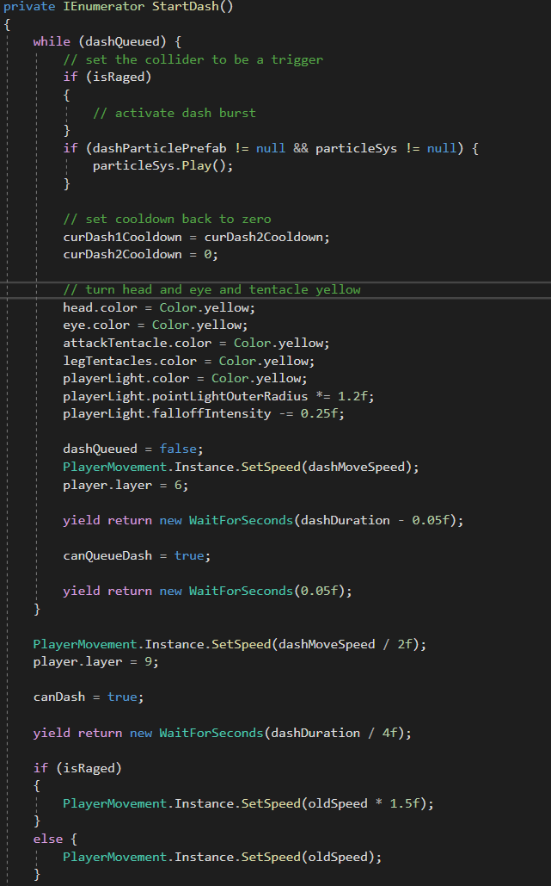

Project: Deimos (Aug 2025 - Aug 2026)
FMOD • Unity • C# • Systems Programming
Overview
• For this project I was mainly focused on systems programming and more specifically audio implementation.
• We decided to use FMOD as it is an industry standard and it was me and my team's job to figure out how to implement it properly.
• We made the audio importing to get all of our music/sfx into the game and once that was finished with split up to each make different audio systems in game
• The ones I made were:
• The dialog system and the subtitling for it
• The music managing system which included crossfading and managing the music being consistent between levels.
• A subtitle importer to make putting subtitles in the game easy and doable by non programmers.
• I also learned the ins and outs of FMOD Studio and then taught the audio team how to properly put in their sound and music so that it would work with our naming conventions and bank assignments.
In Game Demonstration Of The Subtitle And Dialog System
FMOD Bank Loading

• The first major challenge of this project was loading in FMOD banks during runtime and storing them in a way that could be accessed easily later on.
• To store the banks properly me and my team used a Hash Table of string names and corresponding EventReferences.
• The for loop then loads every event associated with every bank that we had in the project and if the event was a part of the Music bank it got stored in a special MusicEventReferences Hash Table which did stuff in our music manager.
Audio Log / Subtitle System

• Another feature that needed added and system that needed designing was subtitling for the in game dialog.
• Our way of doing this is by using a ScriptableObject that stored a list of a custom struct that held all the info for each subtitle line (the length, the text that needed to be displayed and if it was being spoken into a radio) and then reading and displaying it.
• This system of reading the ScriptableObjects and displaying the subtitles is shown above.
COLORSNATCHER (Sep 2026 - Cur)
Unity • C# • Gameplay Programming
Overview
• This project was initially made by me, a programmer friend of mine and an artist during a 48 hour long game jam with the theme: color.
• I made the player, the player's powerups and implemented the UI.
• Since our team had no designer I had complete freedom to design the abilities however I chose (more detail on that in the Player Powerups section).
• Even though it started as a game jam we have continued to work on the game even past the game jam and are working on it.
Player Movement and Attacking
• A large amount of fine tuning went into making the players attack feel good and look good.
• The time between when you click and your hitbox being active is minimized while the time after the hitbox is off is allowed to drag slightly so that the player can feel and view the impact of their attack while waiting for the next to be ready
Player Powerups

• The above code is a small snippet from the dashing routine for the player to show how I did the dashing logic to make it feel smooth and fun for players.
• Each ability was desgined and coded to be unique and fufil a different need of the player.
• The red rage gives the player more damage move speed and attack speed to help with tanky enemies.
• The yellow dash gives the player extra needed mobility and iframes to help with ranged enemies.
• The green goop ball gives the player ranged options and stuns enemies to help with swarms of enemies.
• Each of these I desgined and then implemented quickly and effectivly.
About Me
Hello! I’m Jay Anthony, I’ve been making games for years and have worked on teams as small as 3 programmers to as large as 80. I’ve led subteams to build systems and communicated effectively between disciplines to ensure a quality product. I’ve participated in projects that have been during multiple sprints throughout a year to games that were made in just a weekend. My specialty is in designing scalable audio systems and implementing FMOD studio. I’ve been using the Unity engine for years and have extensive experience in C#, recently I’ve picked up the Unreal engine to complement my growing experience in C++ as that is the industry standard.